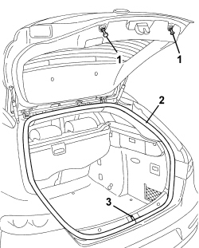
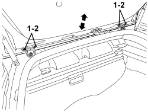

7015A14 TAILGATE - ADJUST CENTRING AND PROFILE - INCLUDES HINGE AND COMPARTMENT SEAL ADAPTATION
- Path
- Procedures > 70 FITTINGS > 7015 TAILGATE/FLAP > 7015A TAILGATE ASSEMBLY > 7015A14 TAILGATE - ADJUST CENTRING AND PROFILE - INCLUDES HINGE AND COMPARTMENT SEAL ADAPTATION
- Kind
- repair procedure (removal / refitting; the operation number is the code)
- Applies to
- all engines; all production periods
- Interactive page
- https://sloeber94.github.io/elrnDB/#/939005351
Applies to: all engines; all production periods
- Open the tailgate.
1. Check that the self-adjusting buffers are working properly.
Replace them if necessary.
Op. 7015B12 TAILGATE SELF-ADJUSTING BUFFERS - R.R.
2. Check that the tailgate housing seal along the entire perimeter is working properly.
3. If necessary, adjust the position of the lock striker.
Op. 7015B18 TAILGATE LOCK STRIKER - R+R

Applies to: all engines; all production periods
- If the adjustments indicated in the previous points are insufficient, adjust the position of the boot hinges as described below.
Support the boot lid appropriately when necessary.
1. Working from both sides of the vehicle, loosen the tailgate bolts and adjust the tailgate position using the slotted holes in the hinges.
2. After adjustment, tighten the bolts to the specified torque.
Component | Fastening | dia | Value (daNm) | Validity |
|---|---|---|---|---|
TAILGATE | Bolt | M6x16.5 | 0.7 ÷ 1.1 |
3. If necessary, adjust the lock striker position as described below.

Applies to: all engines; all production periods
- If the adjustment of the fastening between the tailgate and the hinges is insufficient, proceed as follows.
Op. 7040H12 ROOF REAR TRIM - R.R.
Op. 7040G40 LOAD COMPARTMENT LIGHT BULB HOLDER - R R
Op. 7040B22 LUGGAGE COMPARTMENT/LOAD PLATFORM MOULDING - R+R
Op. 7040B04 SIDE MOULDING (ONE) LH OR RH FOR LUGGAGE COMPARTMENT - R.R.
Op. 7040B10 LOAD PLATFORM (LUGGAGE PLATFORM) TRIM - R+R
Op. 7040B18 LOAD COMPARTMENT LOAD PLATFORM SIDE TRIM ONE LH OR RH - R.R
Op. 7040B30 L/H OR R/H SIDE SUPPORT (ONE) FOR LOAD PLATFORM COVER BLIND - ARRANGE
Op. 7040H42 REAR PILLAR TRIM (ONE), LEFT OR RIGHT- R.R
Op. 7040H68 TAI GATE HOUSING PILLAR TRIM (ONE), LH OR RH - R.R.
1. Working from both sides of the vehicle, loosen the bolts (1a) attaching the tailgate hinges to the body and adjust the hinge position using the slotted holes.
2. After adjustment, tighten the bolts to the specified torque.
Component | Fastening | dia | Value (daNm) | Validity |
|---|---|---|---|---|
TAILGATE HINGES | Bolt | M8x22 | 2.2 ÷ 2.6 |
- If necessary, adjust the lock striker position as described below.

Applies to: all engines; all production periods
- When the adjustment is completed, refit the components removed previously.
Topics linked from this page (11)
- 7015B12 TAILGATE SELF-ADJUSTING BUFFERS - R.R.
- 7015B18 TAILGATE LOCK STRIKER - R+R
- 7040B04 SIDE MOULDING (ONE) LH OR RH FOR LUGGAGE COMPARTMENT - R.R.
- 7040B10 LOAD PLATFORM (LUGGAGE PLATFORM) TRIM - R+R
- 7040B18 LOAD COMPARTMENT LOAD PLATFORM SIDE TRIM ONE LH OR RH - R.R
- 7040B22 LUGGAGE COMPARTMENT/LOAD PLATFORM MOULDING - R+R
- 7040B30 L/H OR R/H SIDE SUPPORT (ONE) FOR LOAD PLATFORM COVER BLIND - ARRANGE
- 7040G40 LOAD COMPARTMENT LIGHT BULB HOLDER - R R
- 7040H12 ROOF REAR TRIM - R.R.
- 7040H42 REAR PILLAR TRIM (ONE), LEFT OR RIGHT- R.R
- 7040H68 TAI GATE HOUSING PILLAR TRIM (ONE), LH OR RH - R.R.